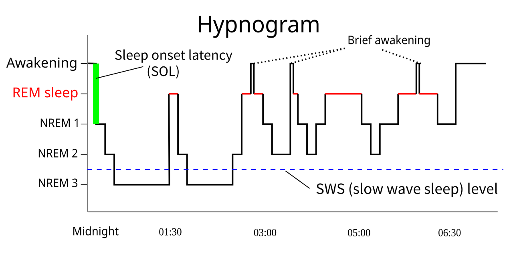

💪 Sức khỏe Nam giới
Sexual Health — Sleep Deprivation & HormonesDeep dive⏱ 8 phút đọc
Giấc Ngủ & Hormone Nam: Vì Sao Mất 1 Tuần Ngủ Thiếu Khiến Testosterone Tụt Dốc Như Già Đi 10 Tuổi?
Nghiên cứu mang tính bước ngoặt của Đại học Chicago đăng trên tạp chí JAMA phát hiện: Chỉ 1 tuần ngủ 5 tiếng mỗi đêm đã khiến nồng độ testosterone của những người đàn ông trẻ tuổi khỏe mạnh sụt giảm từ 10% đến 15%—tương đương với tốc độ lão hóa sinh học của cả một thập kỷ. Tìm hiểu mối liên kết mật thiết giữa các chu kỳ giấc ngủ sâu, nợ ngủ tích lũy và sức sống phái mạnh.
Phần lớn testosterone được sản xuất và đồng hóa trong các chu kỳ ngủ sâu và ngủ REM. Thiếu ngủ mãn tính kích hoạt trục stress HPA, đẩy cortisol tăng cao và bóp nghẹt quá trình phục hồi của tinh hoàn. Ngủ đủ 7–8.5 tiếng với giờ giấc nhất quán là liều 'thuốc tăng test' tự nhiên mạnh mẽ nhất.
Thử Nghiệm Kinh Điển Của Đại Học Chicago Trên Tạp Chí JAMA
Trong một công trình nghiên cứu được trích dẫn nhiều nhất lịch sử nội tiết học giấc ngủ (Leproult & Van Cauter, JAMA 2011), các nhà khoa học đã theo dõi nhóm nam giới trẻ tuổi khỏe mạnh (tuổi trung bình 24, thể lực tốt, không có bệnh lý nền) qua hai giai đoạn:
- Giai đoạn 1: Ngủ đủ 8 đến 9 tiếng mỗi đêm trong phòng thí nghiệm để xác định nồng độ hormone nền tảng.
- Giai đoạn 2: Hạn chế giấc ngủ xuống còn 5 tiếng mỗi đêm trong vòng 7 ngày liên tục (từ 00:30 đến 05:30 sáng).
Kết quả đo đạc nồng độ testosterone mỗi 15 đến 30 phút trong suốt 24 giờ cho thấy:
- Nồng độ Testosterone ban ngày sụt giảm trung bình từ 10% đến 15%.
- Mức giảm rõ rệt nhất ghi nhận vào khoảng thời gian từ 14:00 chiều đến 22:00 đêm—thời điểm nam giới cần năng lượng, sự tập trung và ham muốn nhất.
- Các đối tượng tự báo cáo mức độ sụt giảm nghiêm trọng về tâm trạng, sự chủ động xã hội và cảm giác kiệt sức.
- Để so sánh: Trong quá trình lão hóa tự nhiên, testosterone của nam giới chỉ giảm khoảng 1% đến 2% mỗi năm. Việc mất ngủ 1 tuần đã ép hệ nội tiết của một chàng trai 24 tuổi tụt xuống tương đương với một người đàn ông 35–40 tuổi!

📊 So Sánh Pha Ngủ Sóng Chậm NREM & Giấc Ngủ REM: Giai đoạn sóng chậm (Deep NREM) là thời điểm xung LH kích hoạt tế bào Leydig sản xuất testosterone mạnh nhất, trong khi pha REM phục hồi dẫn truyền thần kinh.(Link sơ đồ y khoa gốc ↗)
Cơ Chế Sinh Học: Tại Sao Cơ Thể Cần Giấc Ngủ Để Tạo Ra Testosterone?
Sự Đồng Bộ Giữa Sóng Chậm (Slow-Wave Sleep) & Tuyến Yên: Quá trình giải phóng hormone tạo hoàng thể (LH) diễn ra theo từng xung đồng nhịp với các đợt sóng delta của giấc ngủ sâu (N3). Không có giấc ngủ sâu, tuyến yên không thể gửi tín hiệu chỉ huy xuống tinh hoàn.
Sự Thăng Trầm Đối Nghịch Giữa Cortisol & Testosterone: Khi thức giấc trong tình trạng thiếu ngủ, nồng độ hormone căng thẳng Cortisol tăng vọt và duy trì ở mức cao suốt cả ngày. Cortisol trực tiếp ức chế enzyme tổng hợp steroid tại tế bào Leydig.
Nợ Giấc Ngủ (Sleep Debt) Tích Lũy: Thuật toán tính toán nợ ngủ (Sleep Debt) cho thấy mỗi giờ ngủ thiếu sẽ tích lũy thành gánh nặng chuyển hóa. Khi nợ ngủ vượt quá 4–5 giờ trong tuần, điểm Phục hồi (Recovery) sẽ rơi vào vùng nguy hiểm và đường cong testosterone bị làm phẳng hoàn toàn.
Tác Động Của Mất Ngủ Lên Các Trụ Cột Sinh Học Phái Mạnh
Khía Cạnh Sức Khỏe
Khi Ngủ Đủ 7.5 – 8.5 Tiếng (Consistent Sleep)
Khi Bị Cắt Giảm Ngủ < 6 Tiếng (Sleep Deprived)
Dấu Hiệu Phản Ánh Trên Thiết Bị Đeo
Sản xuất Testosterone
Đạt đỉnh cao nhất lúc thức dậy; duy trì ổn định cả ngày.
Sụt giảm 15%–20%; đáy hormone xuất hiện sớm vào đầu giờ chiều.
Khả năng phục hồi kém; cơ bắp đau mỏi kéo dài (DOMS).
Hiện tượng cương buổi sáng (NPT)
Xuất hiện đều đặn 3–5 lần/đêm trong các pha ngủ REM.
Biến mất hoặc cương yếu do giấc ngủ REM bị đứt gãy.
Tỷ lệ REM sleep ghi nhận dưới 15% tổng thời lượng ngủ.
Độ nhạy Insulin & Đốt mỡ
Tế bào nhạy bén với insulin; mỡ nội tạng được kiểm soát tốt.
Tăng đề kháng insulin tương đương người tiền tiểu đường; thèm tinh bột nhanh.
Nhịp tim lúc nghỉ RHR tăng +3–6 bpm; biến thiên HRV giảm sâu.
Tâm trạng & Động lực
Tinh thần quyết đoán, tự tin, khả năng chịu áp lực cao.
Dễ cáu gắt, lo âu, giảm khả năng kiềm chế cảm xúc.
Điểm Stress Score ban ngày ghi nhận nhiều đợt xung kích thích.
Thiết Lập Khung Giờ Ngủ Nhất Quán (Sleep Consistency): Đi ngủ và thức dậy trong cùng một khung giờ mỗi ngày (kể cả cuối tuần) với độ lệch không quá 30 phút. Tính nhất quán của nhịp Circadian là yếu tố then chốt quyết định biên độ đỉnh tiết testosterone.
Đón Ánh Nắng Mặt Trời Lúc 07:00 Sáng: Tiếp xúc với ánh sáng tự nhiên 15–20 phút ngay sau khi thức dậy giúp ức chế triệt để melatonin, kích hoạt cortisol buổi sáng lành mạnh và cài đặt đồng hồ sinh học cho đêm tiếp theo.
Cắt Ánh Sáng Xanh Sau 21:00 Tối: Ánh sáng xanh từ màn hình điện thoại ức chế tuyến tùng tiết melatonin, làm chậm thời điểm chớm ngủ (Sleep Latency) và cắt ngắn pha ngủ sâu N3.
Hạ Nhiệt Độ Phòng Ngủ Xuống 18°C – 20°C: Thân nhiệt cần hạ khoảng 1°C để cơ thể chuyển giao vào giấc ngủ sâu. Một căn phòng mát mẻ, tối hoàn toàn và yên tĩnh là điều kiện lý tưởng cho tinh hoàn phục hồi.
Tài Liệu Tham Khảo & Nguồn Y Khoa
Leproult, R., & Van Cauter, E. (2011).Effect of 1 week of sleep restriction on testosterone levels in young healthy men. JAMA, 305(21), 2173–2174. Tạp chí JAMA (PMID: 21632481) ↗
Liu, P. Y., et al. (2015).The relationship between sleep and testosterone in men: a systematic review. Sleep Medicine Reviews, 24, 75–84. Tạp chí Sleep (PMID: 25732152) ↗
Axelsson, J., et al. (2005).Effects of sustained sleep restriction on mitogen-stimulated cytokine production in human men. Sleep, 28(11), 1459–1466. Tạp chí Sleep (PMID: 16335334) ↗
Luboshitzky, R., et al. (2001).Disruption of the nocturnal testosterone rhythm in men with sleep apnea. Endocrine, 14(2), 273–277. Tạp chí Sleep (PMID: 11388656) ↗
📚
Nguồn Tham Khảo Y Khoa & Nghiên Cứu Gốc
Bài viết này được tổng hợp và kiểm chứng từ các nghiên cứu y sinh học, hướng dẫn lâm sàng và tài liệu khoa học thiết bị đeo của Journal of the American Medical Association (JAMA) & Sleep Medicine Reviews.
💪 Men's Health
Sexual Health — Sleep Deprivation & HormonesDeep dive⏱ 8 min read
Sleep Deprivation & Testosterone: Why One Week of Sleep Loss Ages Your Hormones by a Decade
A landmark clinical investigation conducted at the University of Chicago and published in JAMA revealed that just one week of sleep restriction (5 hours per night) plummeted daytime testosterone levels by 10% to 15% in healthy young men—a hormonal decline equivalent to 10 to 15 years of biological aging. Unpack the vital nexus between slow-wave deep sleep, accumulated sleep debt, and male vitality.
The overwhelming majority of diurnal testosterone synthesis occurs during slow-wave and REM sleep. Chronic sleep deprivation activates the HPA axis, driving catabolic cortisol spikes that suppress testicular steroidogenesis. Prioritizing 7–8.5 hours with high sleep consistency is the most potent natural androgen booster available.
The Landmark University of Chicago JAMA Trial
In one of sleep endocrinology's most famous trials (Leproult & Van Cauter, JAMA 2011), researchers monitored healthy young males (mean age 24) across two controlled phases:
- Phase 1: 8 to 9 hours of sleep per night in the sleep laboratory to establish endocrine baselines.
- Phase 2: Sleep restricted to 5 hours per night for 7 consecutive nights (00:30 to 05:30 AM).
Measuring 24-hour profiles sampled every 15 to 30 minutes revealed:
- Daytime serum testosterone dropped by 10% to 15%.
- The most pronounced collapse occurred between 14:00 and 22:00 PM—the exact window men require focus and vigor.
- Participants reported marked decreases in vigor, mood, and social initiative.
- For biological context: Natural aging contracts male testosterone by approximately 1% to 2% per year. Restricting sleep for just one week aged a 24-year-old's endocrine profile by 10 to 15 years!
📊 REM vs. NREM Sleep Architecture: Deep slow-wave NREM sleep driving pulsatile LH release and Leydig cell testosterone synthesis, complemented by REM neurochemical restoration.(Original Scientific Figure Source ↗)
Cellular Biology: Why the Body Demands Sleep for Androgens
Slow-Wave Sleep (N3) Synchronization: Pituitary luteinizing hormone (LH) pulses synchronize with delta slow waves in deep sleep. Without slow-wave architecture, the pituitary fails to signal the gonads.
Cortisol-Testosterone Reciprocal Antagonism: Waking in a sleep-deprived state elevates catabolic cortisol throughout the day, directly blunting steroidogenesis enzymes in Leydig cells.
Accumulated Sleep Debt: When sleep debt exceeds 4–5 hours weekly on wearable analytics, Recovery Scores drop into red and circadian testosterone peaks flatten.
Biological Scorecard: Optimal Sleep vs. Sleep Deprived
Daytime Stress Score flags continuous high strain.
4-Step Practical Protocol for Sleep-Driven Hormone Restoration
Establish Strict Sleep Consistency: Go to bed and wake within a 30-minute window 7 days a week. Circadian consistency drives maximal testosterone amplitude.
Capture 07:00 AM Direct Sunlight: 15–20 minutes of morning light clears adenosine, suppresses melatonin, and anchors the master circadian clock.
Eliminate Blue Light After 21:00 PM: Blue screen wavelengths suppress pineal melatonin release, delaying sleep latency and cutting slow-wave N3 duration.
Cool Bedroom to 18°C – 20°C: Core temperature must drop ~1°C to transition into restorative slow-wave sleep. A dark, quiet, cool sanctuary optimizes testicular recovery.
Clinical References & Scientific Sources
Leproult, R., & Van Cauter, E. (2011).Effect of 1 week of sleep restriction on testosterone levels in young healthy men. JAMA, 305(21), 2173–2174. View on JAMA ↗
Liu, P. Y., et al. (2015).The relationship between sleep and testosterone in men: systematic review. Sleep Med Rev, 24, 75–84. View on PubMed ↗
Axelsson, J., et al. (2005).Effects of sustained sleep restriction on cytokine production. Sleep, 28(11), 1459–1466. View on PubMed ↗
Luboshitzky, R., et al. (2001).Disruption of nocturnal testosterone rhythm in men with sleep apnea. Endocrine. View on PubMed ↗
📚
Clinical Reference & Scientific Backing
This article is synthesized from peer-reviewed medical literature, clinical guidelines, and wearable biometric validation studies from Journal of the American Medical Association (JAMA) & Sleep Medicine Reviews.